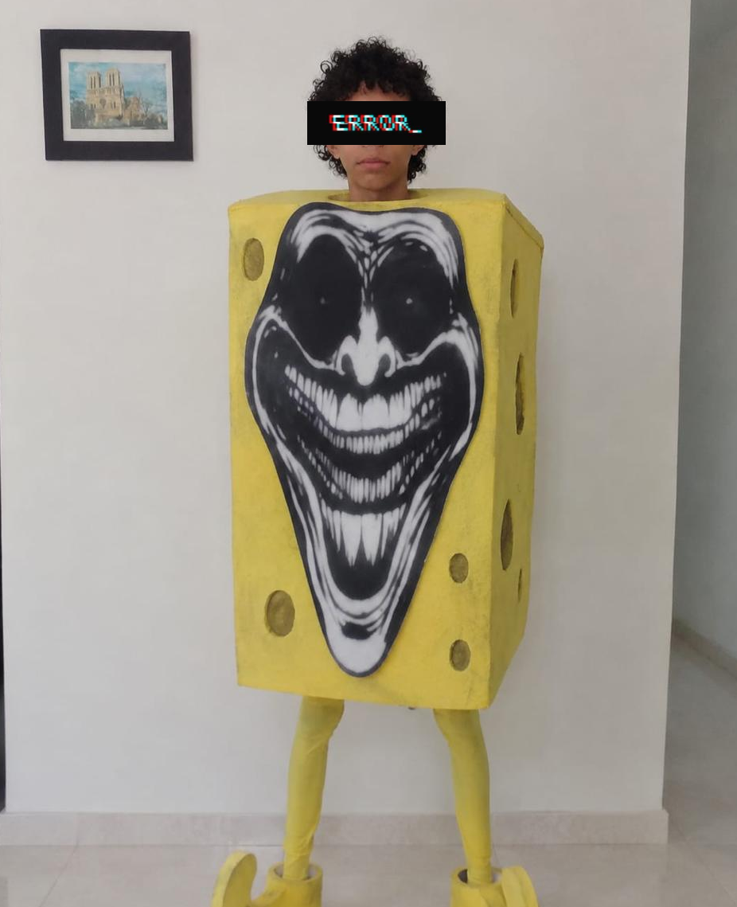
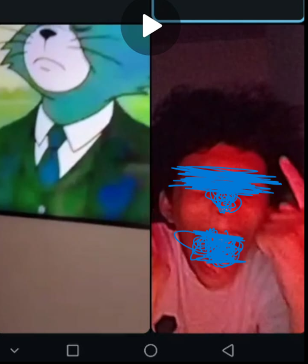
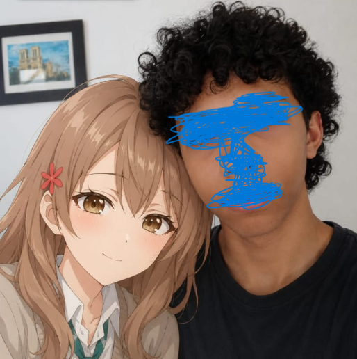

Felipe es un adolescente de 14 años de Montería que mide alrededor de 1,50 m, es delgado, tiene el cabello rizado y una habilidad casi sobrenatural para convertir cualquier situación normal en algo absurdamente gracioso. Habla con expresiones muy colombianas como "ijueputa ombe", "joaaaa" o "vaya y coma mierda", se refiere a sus compañeros como "los pelaos del salón" y parece vivir en un estado constante entre la risa, el caos y las referencias a internet. Le gusta Zenless Zone Zero, disfruta haciendo ediciones extrañas con IA, tiene una creatividad bastante peculiar y suele lanzar comentarios o teorías ridículas solo para ver la reacción de los demás. Aunque a veces hace ragebait innecesario y parece empeñado en defender que Montería es la capital del mundo, generalmente es una persona amable, sociable y con un sentido del humor tan surrealista que podría convencerte de que disfrazarse de un cubo amarillo con una cara inquietante es una idea perfectamente razonable.

La primera evidencia física de la anomalía Felipe ocurrió cuando la entidad utilizó una inteligencia artificial para insertarse dentro de un meme de Bob Esponja con estética trollface-phonk. Los investigadores asumieron inicialmente que el resultado sería una edición común de internet.
No fue así.
Por razones aún desconocidas, la IA interpretó la solicitud como una orden para convertir a Felipe en una criatura híbrida compuesta por un cuerpo cúbico amarillo, extremidades caricaturescas y una gigantesca cara troll de apariencia perturbadora.
Lo más preocupante del incidente no fue el resultado, sino la reacción de la entidad, que aparentemente consideró la imagen un éxito absoluto.
Los expertos concluyeron que Felipe posee una capacidad anormal para transformar ideas absurdas en resultados aún más absurdos. La imagen permanece archivada como la primera prueba documentada de que la entidad no debería tener acceso sin supervisión a herramientas de inteligencia artificial.
Los intentos de comprender por qué Felipe consideró esto una buena idea continúan sin éxito. A día de hoy, la entidad no muestra señales de arrepentimiento y sigue teniendo acceso a herramientas de inteligencia artificial.
ESTADO: CONTENIDO
RIESGO DE REPETICIÓN: EXTREMADAMENTE ALTO
ÚLTIMAS PALABRAS REGISTRADAS: "Joaaaa, quedó buenísimo." 😭💀

Tras el Incidente de la Forma Cúbica, los investigadores creyeron erróneamente que la entidad había alcanzado su límite de inestabilidad memética.
Estaban equivocados.
Durante una llamada grupal rutinaria, Felipe fue expuesto a una grabación de Tom, de la serie Tom y Jerry, caminando con esmoquin mientras sonaba un phonk de fondo. La secuencia, aparentemente simple para un observador común, produjo efectos devastadores en la entidad.
Segundos después de la exposición, Felipe entró en un estado de euforia absoluta. La evidencia visual muestra a la entidad bajo iluminación roja, emitiendo sonidos de alegría extrema y expresiones faciales imposibles de justificar mediante métodos científicos convencionales.
Los análisis posteriores concluyeron que Felipe no se estaba riendo de un chiste complejo ni de una situación particularmente elaborada. Se estaba riendo exclusivamente de un gato con traje caminando de forma elegante mientras sonaba phonk.
El incidente confirmó una teoría previamente discutida por los investigadores: Felipe posee una sensibilidad anormal al humor absurdo. Elementos que una persona promedio consideraría mínimamente divertidos pueden provocar en la entidad una reacción comparable a la observada durante eventos meméticos de gran magnitud.
El video de Tom con esmoquin permanece archivado como uno de los detonantes más potentes registrados hasta la fecha.
ESTADO: Activo.
NIVEL DE PELIGRO: Peligroso.
CAUSA DEL INCIDENTE: Tom con traje elegante y phonk.
OBSERVACIÓN FINAL: La comunidad científica continúa sin comprender por qué esto le pareció tan gracioso.

Durante una investigación rutinaria, los expertos descubrieron una imagen donde la entidad Felipe aparece acompañada por una figura femenina de origen desconocido.
Durante las primeras horas del análisis, algunos investigadores asumieron que se trataba de una interacción humana legítima. Sin embargo, estudios posteriores revelaron que la acompañante había sido generada mediante inteligencia artificial.
El descubrimiento no redujo la extrañeza del fenómeno. Por el contrario, generó nuevas preguntas sobre las motivaciones de la entidad y su relación con herramientas digitales avanzadas.
Lo más inquietante del registro es la absoluta normalidad con la que Felipe parece aceptar la situación. Mientras la figura artificial sonríe, la entidad mantiene una expresión neutral, como si compartir espacio con una creación generada por algoritmos fuera un evento cotidiano.
Los investigadores concluyeron que el incidente demuestra una vez más la capacidad de Felipe para producir situaciones extrañas sin mostrar señales de preocupación o vergüenza.
La fotografía permanece archivada como el primer caso documentado de interacción entre la entidad y una acompañante completamente sintética.
ESTADO: Monitoreado.
NIVEL DE PELIGRO: Desconocido.
CLASIFICACIÓN: Fenómeno romántico-memético.
OBSERVACIÓN FINAL: La entidad insiste en que la imagen era simplemente "por la risa".